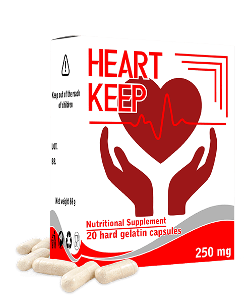

Balita
| Jake
Santos
Matandang edad, hindi hadlang sa buhay! 57-taong-gulang na siyentipiko, ipaliwanag ng sikreto mahabang buhay at magandang kalusugan
Ang sikat na Philippine cardiologist, inventor, professor at medicine awards winner na si
Doctor Willie Ong
Ayon kay Professor, ang sikreto ng mahabang buhay ay ang mga malulusog na blood vessels. Kapag malilinis at malulusog ang mga iyon, madali kang makakaabot sa edad na 120 o higit pa, at mananatili kang malusog. Sa ngayon, ang kalagayan ng kalusugan ng dating cardiologist ay nagpapatunay sa mga pahayag na ito
Nakapanayam ng aming correspondent Doctor Willie Ong
Ang pangulo mismo ang bumati kay Professor Ong.
Doctor Willie Ong
- Professor, maraming beses na sinabi ninyo na ang mga malinis na blood vessels ay ang batayan ng magandang kalusugan. Bakit po, sa tingin ninyo?
Madali iyan. Ang paggana ng lahat ng mga internal organs at systems natin ay depende sa kalidad ng daloy ng dugo. Kasi, ano ba naman ang daloy ng dugo? Ito ay ang pagdadala ng oxygen at nutrisyon sa mga internal organs at ang pagkuha at pag-alis ng carbon dioxide at metabolic waste. Kapag bata pa tayo, lagi tayong gumagalaw, at bago pa ang mga blood bessels natin: banat pa, malinis pa at sapat pa ang nutrisyon sa bawat organo. Pero, pag tumatanda na tayo, mas kaunti na tayong gumagalaw, at narurumihan na rin ang mga blood vessels natin. Marami naman ang mga dahilan - hindi lamang iyong mga mapanganib (tulad ng paninigarilyo, hindi tamang nutrisyon, maruming kapaligiran, sedentary (laging nakaupo) lifestyle), pero medyo natural pa rin (halimbawa, ang lipid deposition na nangyayari sa lahat ng tao)
Ano naman ang mga maruruming blood vessels? Isipin mo ang mga tubo na puno ng kalawang. Ano bang nangyayari sa mga tubo na puno ng kalawang? Tumataas ang presyon ng tubig, at nagiging pait ang lasa niyan. Pare-pareho lang iyong nangyayari sa mga blood vessels. Kapag may kolesterol o iba pang mga sangkap na naiipon sa loob ng mga daluyan ng dugo, pagtaas ng presyon ng dugo (pangunahing sanhi ng hypertension ang mga maruruming vessel ng dugo!). Tapos, narurumihan na rin ang iyong dugo, at nagiging mahina ang daloy ng dugo. Ang resulta: lahat ng mga organo at sistema (na siyang binubuo ng ating katawan) ay napinsala. Kasi, pati na rin ang balat ay isang sistema
Ano ang dulot nito sa iyo? Mas mabilis ka nang tumatanda. Pero, kapag nililinis mo kung minsan ang mga blood vessel mo, mabubuhay ka ng hanggang edad na 120. Bukod dito, kapag malinis ang ating blood vessels, mas hindi tayo magkakasakit - sa anumang organo, at saka, gagana rin nang maayos ang utak natin. Ang ibig sabihin, sa pamamagitan ng paglilinis ng mga blood vessels, sigurado mong mapapahaba ang iyong buhay at kalusugan. Hindi ito theory lamang. Noong natrabaho pa ako bilang doktor, inirekumenda ko ito sa mga pasyente ko at ngayon ay ginagawa ko ito sa sarili ko. Ang lahat sa mga sumunod sa payo ko, mas malusog at mas masigla na sila kaysa sa mga kagulang nila
Kaya, unti-unting narurumihan ang mga blood vessels. Kung hindi mo pa kailanmang
nalinis ang mga iyan, kapag mahigit 40 taong gulang ka na, masyadong marumi na ang mga blood vessels mo.
Kaya, sa madaling panahon ay makakaapekto ito sa iyong kalusugan, o kaya naman baka naapektado na
iyan
Anu-ano naman ang mga masamang maidudulot ng pagkakaroon ng maruming blood vessels?
Sabi ko na, ang buong katawan ay nahihirapan dahil dito. Pero, syempre, ang unang napipinsala ay ang mga organo at mga sistema ng katawan na may direktang kaugnayan sa sirkulasyon ng dugo, ibig sabihin, ang cardiovascular system.
Mga maidudulot ng pagkakaroon ng maruming blood vessels:
- Atherosclerotic vascular disease. Tumitigil sa paggana ang mga blood vessels:
nababarado ang mga maliliit na blood vessels, at sobrang dumarami ang cholesterol na naiipon sa mga
malalaki.
- Cardiac ischemia. Nangyayari ito dahil sa regular na kakulangan ng daloy ng dugo sa mga
coronary vessel, na dulot ng maruruming vessels.
- Stroke. Dahil sa hindi sapat na daloy ng dugo sa utak, nagsisimulang mamatay ang nerve
endings. Nagdudulot iyo sa pagkawala ng ilang mga function ng utak.
- Hypertension. Nangyayari ito nang kumikipot ang mga blood vessels dahil sa pagiging
marumi. Nagdudulot ito sa pagtaas ng blood pressure.
- Phlebeurysm "Varicose veins". Hindi lamang sa mga binti ito nangyayari "na madalas na
pinag-aalala ng mga babae", kundi pati na rin sa loob ng katawan. Isa sa mga maidudulot ng varicose
veins ay ang hemorrhoids o almoranas.
- Venous and arterial thrombosis. Kapag matagal na narurumihan, isang blood clot ang
maaaring mabuo sa mga blood vessels. Humahantong ito sa pagkamatay ng vessel, at, dahil dito, pwede ring
mamatay ang mga cells sa partikular na organ. Kapag pumapasok sa dugo ang namuong blood clot, maaari
itong humantong sa pagbara ng mga daluyan ng dugo sa puso. Nagdudulot ito sa atake sa puso, na
nakamamatay sa 70% ng mga kaso.
Madalas itong nangyayari! 4 times na mas maraming tao ang namamatay dahil sa mga
karamdaman sa cardiovascular system kumpara sa kamatayang dulot ng iba pang mga karamdaman. Alam ito ng mga
doktor, alam nila na dapat linisin ang mga blood vessels, pero walang ganoong practice dito sa Pilipinas, di
ko alam kung bakit. Maraming mga doktor ang nagrereseta ng mga tabletas sa hypertension para mapababa ang
blood pressure. Pero, hindi sila nakapagpapagaling kundi nagbibigay ng pansamantalang epekto na lang. Pero
yung dapat gawin mo ay linisin ang mga blood vessels. Sa Europe at sa America, matagal na ginagawa ito ng
lahat ng mga taong mahigit edad 35-40. Ibig sabihin, doon, alam ng lahat ng mga tao na dapat linisin ang
blood vessels. Bakit wala tayo nito dito sa Pilipinas? Malaking katanungan ito para sa
akin.
- Mayroon bang nakikitang sintomas ng maruming mga blood vessels?
Oo syempre. Ito ang mga pangunahing sintomas:
- Mayroon bang nakikitang sintomas ng maruming mga blood vessels?
Oo syempre. Ito ang mga pangunahing sintomas:
- Migraine - sakit ng ulo;
- Mahina ang memorya;
- Laging pagod;
- Insomnia;
- Problema sa pakikipagtalik;
- Humina ang paningin at pandinig;
- Mataas na blood pressure;
- Dyspnea at angina pectoris;
- Maputla ang balat sa mga binti;
- Sakit ng joints at kalamnan;
Pero, kahit kapag wala kang mga sintomas na ito, kailangan mo ring linisin ang mga blood
vessels mo, tuwing 5 taon matapos sumapit sa edad na 30. Kung gagawin mo iyon, mananatili kang malakas at
malusog palagi.
Sa totoo lang, mabilis na dumumi ang mga blood vessels, lalo na kapag matanda na tayo. Kahit kapag hindi ka kumakain ng burgers o french fries kada araw. Kahit kapag kumain ka ng isang sausage o scrambled egg, sapat na iyon para may ilang cholesterol sa mga walls ng blood vessels mo. Tapos, dumarami at naiipon ang naturang dumi sa loob ng mga blood vessels.
- Pwede ba ninyong ibahagi sa amin ang inyong sikreto ng paglilinis ng mga blood vessels?
Sa totoo lang, mabilis na dumumi ang mga blood vessels, lalo na kapag matanda na tayo. Kahit kapag hindi ka kumakain ng burgers o french fries kada araw. Kahit kapag kumain ka ng isang sausage o scrambled egg, sapat na iyon para may ilang cholesterol sa mga walls ng blood vessels mo. Tapos, dumarami at naiipon ang naturang dumi sa loob ng mga blood vessels.
- Pwede ba ninyong ibahagi sa amin ang inyong sikreto ng paglilinis ng mga blood vessels?
Hanggang kamakailan lamang, tumagal ng maraming buwan ang buong proseso. Ako mismo ang humanap, pumili at pumitas ng mga halamang panggamot, natagpuan ko ang mga iyon sa palengke o nag-order sa Internet, tapos gumawa ako ng mga gamot. Sa ngayon, hindi ko ito ginagawa, kasi kamakailan lamang, ang mga kasamahan ko sa National Cardiology Research Center (NCRC) ay lumikha ng isang gamot na panlinis ng mga blood vessels na mas maganda at mas mura ang presyo. Ang tawag nito ay HeartKeep. Isa itong gamot sa hypertension na nagsasaayos ng blood pressure. Nakapagpapagaling ito sa mataas na blood pressure dahil nililinis nito ang mga blood vessels. Kaya, perpekto ito para sa mga layunin natin.
Hanggang kamakailan lamang, tumagal ng maraming buwan ang buong proseso. Ako mismo ang humanap, pumili at pumitas ng mga halamang panggamot, natagpuan ko ang mga iyon sa palengke o nag-order sa Internet, tapos gumawa ako ng mga gamot. Sa ngayon, hindi ko ito ginagawa, kasi kamakailan lamang, ang mga kasamahan ko sa National Cardiology Research Center (NCRC) ay lumikha ng isang gamot na panlinis ng mga blood vessels na mas maganda at mas mura ang presyo. Ang tawag nito ay HeartKeep. Isa itong gamot sa hypertension na nagsasaayos ng blood pressure. Nakapagpapagaling ito sa mataas na blood pressure dahil nililinis nito ang mga blood vessels. Kaya, perpekto ito para sa mga layunin natin.

Napakaganda ng HeartKeep, dahil sa pamamagitan nito, kahit
na kapag napakarumi na ng mga blood vessels mo, kaya mong linisin iyan sa loob ng 1-2 linggo lang
kung regular mo itong ginagamit.
Gusto ko ring sabihin na ang gamot na ito ay hindi naglalaman ng mga kemikal kundi mga highly concentrated extract lamang galing sa mga halamang panggamot na maganda sa paglilinis ng mga blood vessel. Kaya hindi ito nakakapinsala sa katawan, kundi naman kapaki-pakinabang.
May mga dating pasyente ko na nagpapatingin pa rin sa akin, kabilang sa mga ito ang mga gustong maglinis ng blood vessels. Sa ngayon, itong gamot na ito lamang iyong inirerekumenda ko sa kanila. Ang lahat sila ay natulungan nito.
May mga opisyal na statistics sa website ng NCRC sa paglilinis ng mga blood vessels, na nakuha sa mga clinical study. Sa kabuuan, mga 2700 pasyente ang lumahok sa pananaliksik. Lahat sila ay sumailalim sa buong treatment course sa pamamagitan ng HeartKeep.
Mga Resulta ng Pananaliksik:
- Naayos ang blood pressure matapos ang 1-2 araw ng paggamit ng gamot - 99% ng mga kalahok
- Naayos ang heart rate matapos ang isang treatment course - 98% ng mga kalahok
- Kumpletong pag-alis ng cholesterol sa mga blood vessels matapos ang isang treatment course - 99% ng mga
kalahok
- Naging mas epektibo ang pagpapagamot sa mga chronic illneses - 99% ng mga kalahok
- Bumuti ang pangkalahatang kalusugan - 100% ng mga kalahok
- Walang masamang side effects ang gamot - 100% ng mga kalahok
- Magkano ba ang HeartKeep, at saan po ito mabibili?
Siguro, alam na ninyo na senior citizen na ako at para sa akin, marami nang gamot ngayon ang sobrang mahal ang presyo. Kaya, ayoko na namang magrekomenda ng anumang gamot na mahal ang presyo. Ang HeartKeep na ito naman, abot-kayang lang ito, lalo na ngayon.
Ito ang pangunahing gamot sa listahan ng Philippine Hypertension Control Program na pinondohan ng pamahalaan. Sa ilalim ng programang ito, ang gamot na ito ay maaaring matanggap ng simumang tao.
Paano tanggapin ang HeartKeep, delivery kahit saanman sa Pilipinas.
Para makakuha ng HeartKeep, kailangan mong:
- Punan ang application form sa website.
- Pagkatapos nito, tatawagan ka ng manager para tukuyin ang shipping address
- Matapos ang 5-7 araw matapos i-deliver, tatanggap ka ng parcel na may HeartKeep sa
post office.
Para mapanatiling malinis ang mga blood vessels mo, inirerekumenda kong ulitin ang treatment course tuwing 1-2 taon. Lalo na, kailangang gawin ito ng mga may edad 40 pataas Sa gayon, maaari mong palakasin ang iyong kalusugan at maantala ang pagtanda. Kasi, mga malinis na blood vessels talaga ang susi sa kalusugan.
- Maraming salamat po sa kawili-wiling pakikipanayam, Professor Ong
Matapos ang interview, pinag-usapan ko ng kaunti si Professor, at inamin niya na nagtatanim pa rin siya ng mga gulay sa kanyang bakuran at nakakatulong din siya sa kanyang mga bata na senior citizens na rin. Ang kanyang asawa, si Maria Salongga Ong ay buhay pa rin - 99 taong gulang na ito. Kada taon pa rin ay naglilinis ang mag-asawa ng kani-kanilang mga blood vessels. Ayon kay Professor, kung hindi nila ito ginagawa, namatay na yata sila, tulad ng lahat ng mga kagulang nila.

Opisyal na form ng application
Thank you! Your submission has been received!
Oops! Something went wrong while submitting the form.